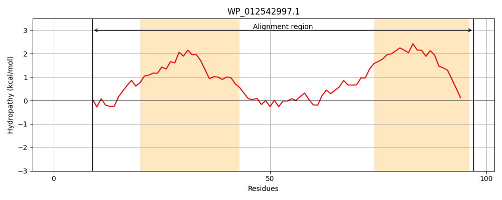
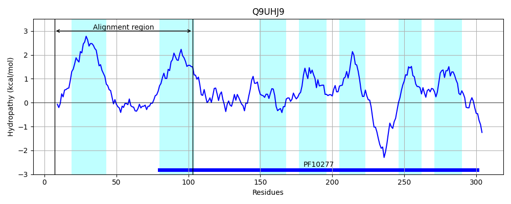
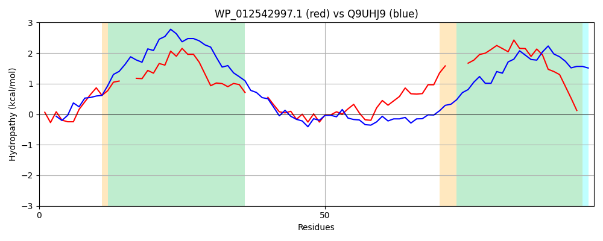

Hit Accession: Q9UHJ9
Hit TCID: 9.B.131.1.2
Hit Description: gnl|BL_ORD_ID|19108 gnl|TC-DB|Q9UHJ9|9.B.131.1.2 Post-GPI attachment to proteins factor 2 OS=Homo sapiens GN=PGAP2 PE=2 SV=1
Mach Len: 97
e:0.000050
Query TMS Count : 2
Hit TMS Count: 7
TMS-Overlap Score: 1.900000
Predicted Substrates:None
BLAST Alignment:
| Protein Hydropathy Plots: | |
|---|---|
|  |  |
Pairwise Alignment-Hydropathy Plot: | |
|  | |